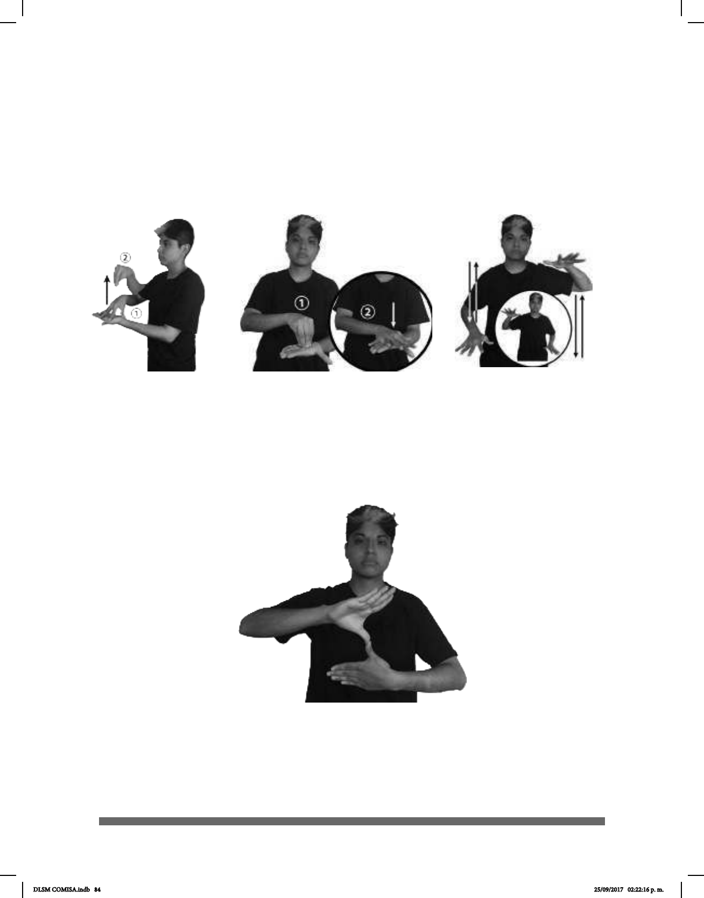

84
Existen señas en las que, a pesar del movimiento y del cambio de conguración, la
orientación de la mano dominante y de la mano base permanece igual, como ocurre, por
ejemplo, en las señas de copia y cita, donde la mano dominante realiza dos movimientos,
pero la palma conserva su orientación hacia abajo; asimismo, la palma de la mano base
queda orientada hacia arriba. Caso similar es el de la seña de a veces, en la cual las
palmas de ambas manos están orientadas hacia abajo pese a que es una seña alternada.
COPIA
CITA
AMÉRICA
En el caso de otras señas, la orientación de ambas manos es diferente una de otra desde
el inicio de la articulación de la seña, por ejemplo, América, donde la mano de la palma
dominante se encuentra hacia afuera, mientras que la de la mano base está hacia dentro.
En esta seña, ambas manos quedan inmóviles.
A VECES
DLSM COMISA.indb 84 25/09/2017 02:22:16 p. m.